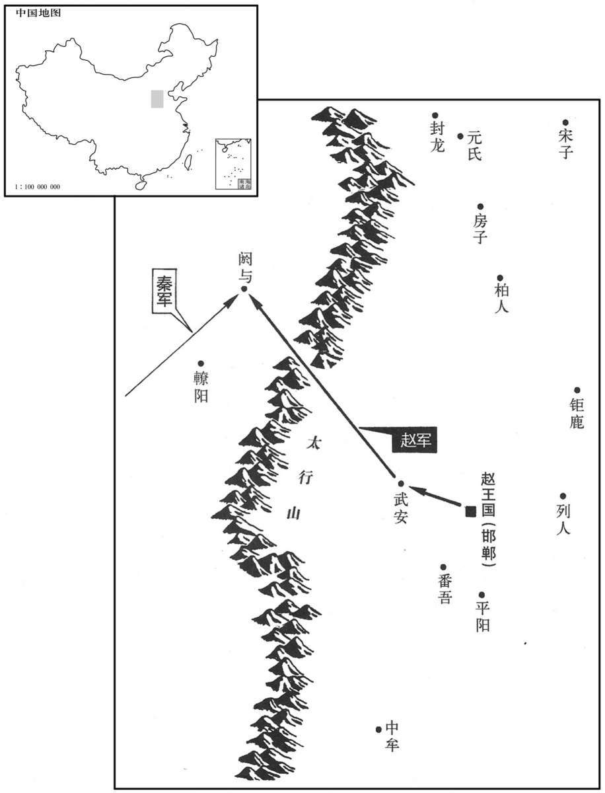

公元前270年资治通鉴：本年记事、原文与白话对照
按原书编年位置阅读；追叙和史论不等于本年发生的事件。白话采用所据译本，缺译不以生成译文补齐。
卷5 · 本年记事
公元前270年 · 赧王在位第45年
四十五年〔（辛卯、前二七○）〕

本年形势与背景参考图
秦伐赵，围阏与。〔司马彪志：上党郡涅县有阏与聚。水经注：上党沾县有梁榆城，即阏与故城。卢谌征艰赋曰：访梁榆之虚郭，乃阏与之旧平。史记正义曰：阏与在潞州铜鞮县西北二十里。又仪州和顺县亦有阏与城。仪、潞相近，二所未详。又阏与山在潞州武安县西南五十里，赵奢拒秦军于阏与，即山北也。河东图：辽州和顺县，晋大夫梁余子养邑；秦伐阏与，赵奢救之。是此辽州即唐之仪州。阏，阿葛翻，又于达翻。康音曷，又音嫣。与，音预，又音余。史记正义曰：阏，于连翻。汉书音义：涅，乃结翻。聚，才喻翻。沾，他兼翻。谌，时壬翻。鞮，丁兮翻。潞，鲁故翻。〕赵王召廉颇、乐乘而问之〔索隐曰：乐乘、乐毅之宗人也。颇，普河翻。〕曰：“可救否？”皆曰：“道远险陿，难救。”〔陿，与狭同，隘也。〕问赵奢，赵奢对曰：“道远险陿，譬犹两鼠斗于穴中，将勇者胜。”〔言将是勇者胜也；将，平声。或曰：帅勇者则胜；将，去声。〕王乃令赵奢将兵救之。去邯郸三十里而止，〔令，卢经翻。邯郸，音寒丹。〕令军中曰：“有以军事谏者死！”〔令，力正翻。赵奢此令，非以禁约所部，以愚秦军也。〕
秦国进攻赵国，围困阏与城。赵王召见廉颇、乐乘问道：“可以援救吗？”两人都说：“道路遥远，更兼险峻，难救。”再问赵奢，赵奢回答说：“道路遥远险峻，就好比两只老鼠在洞穴中咬斗，将是勇敢者取胜。”赵王于是令赵奢率领军队前去援救。赵奢刚离开邯郸三十里就停止不前，下令军中说：“如有人谈及军事，一律处死！”
本段人物：赵奢
秦师军武安西，〔班志，武安县属魏郡。宋白曰：洺州治永年县；隋改广平为永年，属武安郡。秦军勒兵武安西，即此地。刘昫曰：磁州治滏阳县，汉武安县地；隋又置武安县，亦属磁州。磁，祥之翻。昫，吁句翻。〕鼓噪勒兵，武安屋瓦尽振。赵军中候有一人言急救武安，赵奢立斩之。〔此军之中候也。汉北军中候之官本此。或曰：军中之候，军吏也。〕坚璧二〔【章：十二行本“璧”作“壁”；乙十一行本同；孔本同。十二行本“二”上有“留”字；乙十一行本同；孔本同；退斋校同。】〕十八日不行，复益增垒。〔复，扶又翻，又音如字。垒，力水翻。〕秦间入赵军，赵奢善食遣之。间以报秦将，〔间，古苋翻。此孙子所谓反间也。食，祥吏翻。将，即亮翻。〕秦将大喜曰：“夫去国三十里而军不行，乃增垒，阏与非赵地也！”赵奢既已遣间，卷甲而趋，〔卷，读曰卷。凡卷舒之卷皆同音。〕一〔【章：十二行本“一”作“二”；乙十一行本同。】〕日一夜而至，去阏与五十里而军，军垒成，秦师闻之，悉甲而往。赵军士许历请以军事谏，赵奢进之。〔姓谱：许姓本自姜姓，炎帝之后，太岳之胤；其后以国为氏。〕许历曰：“秦人不意赵至此，其来气盛，将军必厚集其陈以待之；〔陈，读曰阵。〕不然，必败。”赵奢曰：“请受教！”许历请刑，赵奢曰：“胥，后令邯郸。”〔索隐曰：按胥、须古人通用，今者胥后令，谓胥为须，须者待也，待后令，谓许历之言，更不拟诛之，故更待后令也。邯郸二字，当为欲战，谓临战之时，许历复谏也。余谓“胥”语绝，许历请刑，赵奢令其且待也。盖谓敢谏者死，邯郸之令耳，今既自邯郸进军近阏与矣，许历之谏固在邯郸之后，不当用邯郸之令以杀之，故曰后令邯郸。令，力正翻。邯郸，音寒丹。奢令，力丁翻。〕许历复请谏，曰：“先据北山上者胜，后至者败。”赵奢许诺，即发万人趋之。秦师后至，争山不得上；〔趋，七喻翻；又音如字。得上，时掌翻。〕赵奢纵兵击秦师，秦师大败，解阙与而还。〔还，从宣翻，又音如字。〕赵王封奢为马服君，〔服虔曰：马服，犹言服马也。括地志：邯郸县西北有马服山。〕与廉、蔺同位；以许历为国尉。
秦国军队驻扎在武安城西，列阵大喊大擂，武安城内的屋瓦都为之震动。赵军中一个军吏忍不住提议急救武安，被赵奢立即斩首。赵奢军坚守二十八天不动，反倒增修营垒。秦国一个间谍潜入赵军，赵奢佯装不知，用好吃好喝招待他。间谍回去报告秦军大将，秦军大将十分高兴地说：“援军离开国都三十里就按兵不动，还增修营垒，阏与一定不是赵国的了！”赵奢放走间谍以后，下令部队卷起盔甲悄声前进，一天一夜便到了离阏与五十里的地方，扎下营来，修起营垒。秦国军队听说后，披甲前往迎敌。赵奢军中有个军士许历要求提出军事建议，赵奢便召他进来。许历说：“秦军没想到赵军会到这里，他们来势盛气凌人。赵将军你一定要集中兵力排出战阵对付，不然必败。”赵奢说：“我接受你的指教。”许历以自己违反了军纪，请处死刑，赵奢忙说：“且慢，现在是邯郸那次军令以后的事了。”许历便再次提出建议说：“先占领北山的人必胜，后到的必败。”赵奢点头称是，立即派出一万人前去北山，秦军后到，争夺北山无法攻上。于是，赵奢指挥全军猛击秦国军队，秦军大败，撤去对阏与的包围，退兵而还。赵王因此封赵奢为马服君，与廉颇、蔺相如同等地位；又任命许历为国尉。
本段人物：赵奢
穰侯言客卿灶于秦王，〔穰，人羊翻。〕使伐齐，取刚、寿以广其陶邑。〔括地志：故刚城在衮州龚丘县。寿，郓州之县也。余据唐志：郓州寿张县，武德初置寿州。通鉴书此，以发范睢间穰侯之事，古苋翻。〕
魏冉向秦王介绍名叫灶的客卿，派他率军进攻齐国，夺取刚、寿两地，用来扩大自己的陶邑封地。
初，魏人范睢〔姓谱：范本陶唐氏之后，随会为晋大夫，食采于范，后有〔因〕氏焉。睢，音虽。〕从中大夫须贾使于齐，〔战国之时，仍周之制，置上、中、下三大夫。汉百官表：中大夫掌论议。须姓，密须氏之后。风俗通：须姓，太昊之后。盖本之须句。使，疏吏翻。句，音朐。〕齐襄王闻其辩口，私赐之金及牛、酒。须贾以为睢以国阴事告齐也，归而告其相魏齐。魏齐怒，笞击范睢，折胁，折齿。睢佯死，卷以箦，置厕中，使客醉者更溺之，〔索隐曰：折胁，折齿，谓击折其胁，又拉折其齿也。箦，谓苇荻之薄，用之以卷其尸也。余谓箦字从竹，盖竹为之，非苇荻之薄也。又谓竹东南之产，北人贵之，自江以北饶苇荻，人率织之以为薄，寝或以为荐籍。索隐以苇薄为箦，习于所见而从俗所呼者耳。相，息亮翻。笞，丑之翻。折，力答翻。卷，读曰卷。箦，竹革翻。更，工衡翻。溺，奴吊翻。〕以惩后，令无妄言者。〔令，力丁翻。〕范睢谓守者曰：“能出我，我必有厚谢。”守者乃请弃箦中死人。魏齐醉，曰：“可矣。”范睢得出。魏齐悔，复召求之。〔令，卢经翻。复，扶又翻，又音如字。〕魏人郑安平遂操范睢亡匿，更姓名曰张禄。〔操，七刀翻。〕
起初，魏国人范睢随从中大夫须贾出使齐国，齐襄王听说他能言善辩，私下赠给他金子及酒食。须贾以为范睢把魏国的秘密告诉了齐国，回国后便向魏国宰相魏齐告发。魏齐十分震怒，下令鞭打范睢，折断了肋骨，打脱了牙齿。范睢只好装死，被卷进竹席，抛到厕所，魏齐还派醉酒的宾客向他身上溺尿，以惩戒后人，不得妄言。范睢悄悄对看守说：“你放出我，我必有重谢。”看守于是去请示把席中死人扔掉，魏齐正喝醉了酒，便说：“可以。”范睢这才得以脱身。事后魏齐后悔，又派人去搜索范睢。魏国人郑安平把范睢藏匿起来，改换姓名叫张禄。
本段人物：范雎
秦谒者王稽使于魏，〔谒者，秦官，汉因之。志云：主殿上时节威仪。谒者仆射一人为谒者台率，其下有给事谒者，有灌谒者。使，疏吏翻。率，读曰帅。〕范睢夜见王稽。稽潜载与俱归，荐之于王，王见之于离宫。〔离宫，别宫也。〕范睢佯为不知永巷而入其中，〔佯，音羊，古字多作“阳”，诈也。如淳曰：周宣王姜后脱簪珥，待罪永巷，后改为掖庭。师古日：永，长也。本谓宫中之长巷也；或曰宫中狱也。〕王来而宦者怒逐之，曰：“王至！”范睢谬曰：“秦安得王，秦独有太后、穰侯耳！”〔谬，靡幼翻，误也，诈也。穰，人羊翻。〕王微闻其言，乃屏左右，跽而请曰：“先生何以幸教寡人？”对曰：“唯唯。”如是者三。〔屏，卑郢翻，又卑正翻；后凡屏退之屏皆同音。跽，忌己翻，跪也。唯，于癸翻，盖应声也。凡唯诺之唯皆同音。〕王曰：“先生卒不幸教寡人邪？”〔卒，子恤翻，终也。邪，音耶。〕范睢曰：“非敢然也！〔睢，音虽。然，犹言如是也。〕臣，羇旅之臣也，交疏于王，而所愿陈者皆匡君之事，处人骨肉之间，〔处，昌吕翻。〕愿效愚忠而未知王之心也，此所以王三问而不敢对者也。臣知今日言之于前，明日伏诛于后，然臣不敢避也。且死者，人之所必不免也，苟可以少有补于秦而死，此臣之所大愿也。〔少，始绍翻。〕独恐臣死之后，天下杜口裹足，莫肯乡秦耳。”〔谓天下之士惩睢之死，不敢复言。乡，读曰向。〕王跽曰：“先生，是何言也！今者寡人得见先生，是天以寡人溷先生而存先王之宗庙也。〔溷；谓溷渎之也。汉陆贾曰“毋久溷公！”即此义，音户困翻。毛晃曰：溷，浊也，又污辱也。〕事无大小，上及太后，下至大臣，愿先生悉以教寡人。无疑寡人也！”范睢拜，王亦拜。范睢曰：“以秦国之大，士卒之勇，以治诸侯，譬若走韩卢而博蹇兔也，〔韩卢，天下之骏犬。蹇兔，病足之兔。韩卢搏兔，无不获者，况蹇兔乎！治，直之翻。〕而闭关十五年，不敢窥兵于山东者，是穰侯为秦谋不忠，而大王之计亦有所失也。”〔穰，人羊翻。为，于伪翻。〕王跽曰：“寡人愿闻失计！”然左右多窃听者，范睢未敢言内，先言外事，以观王之俯仰。因进曰：“夫穰侯越韩、魏而攻齐刚、寿，非计也。〔夫，音扶。〕齐闵王南攻楚，破军杀将，〔谓杀唐昧也，见上卷十四年。闵，读曰闵。将，即亮翻。〕再辟地千里，〔辟，读曰辟，昧，莫葛翻。〕而齐尺寸之地无得焉者，岂不欲得地哉？形势不能有也。诸侯见齐之罢敝，起兵而伐齐，大破之，齐几于亡，〔事见上卷三十一年。罢，读曰疲。几，居依翻。〕以其伐楚而肥韩、魏也。今王不如远交而近攻，得寸则王之寸也，得尺亦王之尺也。今夫韩、魏，中国之处〔夫，音扶。康曰：处，敞吕翻；余谓处，昌据翻，于世俗常言，音义为长。〕而天下之枢也，〔以门户为喻，门户之阖辟皆由于枢。〕王若用〔【章：十二行本“用”作“欲”；乙十一行本同；孔本同，退斋校同。】〕霸，必亲中国以为天下枢，以威楚、赵，〔用霸者，谓用霸天下之术。〕楚强则附赵，赵强则附楚，〔强者未易柔服，故先亲附弱者。易，以豉翻。〕楚、赵皆附，齐必惧矣，齐附则韩、魏因可虏也。”王曰：“善。”乃以范睢为客卿，与谋兵事。〔范睢谋兵事，则三晋受兵祸，而穰侯兄弟皆为秦所逐矣。〕
秦国任谒者之职的王稽出使魏国，范睢深夜前去求见。王稽把他暗中装上使车，一起带回国，推荐给秦王。秦王决定在离宫召见范睢。范睢假装不识道路走入宫中巷道。秦王乘轿舆前来，宦官怒声驱赶范睢说：“大王来了！”范睢故意胡说道：“秦国哪里有大王，秦国只有王太后和穰侯而已！”秦王略微听见了几句，便屏退左右随从，下跪请求说：“先生有什么指教我的？”范睢只说：“是的是的。”如此三次。秦王又说：“先生到底不愿对我赐教吗？”范睢才说：“我哪里敢呢！我是一个流亡在外的人，和大王没有什么交往，而想向您陈述的又都是纠正您失误的大事，关系到您骨肉亲人，我即使愿意一效愚忠却还不知大王的真心，所以大王三次下问我都不敢回答。我知道今天在您面前说出，明天就有处死的危险，但我还是不敢回避。死，是人人都无法免除的，如果我的死能对秦国有所裨益，就是我最大的愿望了。我只怕我被处死之后，天下的贤士都闭口不言，裹足不前，不再投奔秦国了。”秦王又下跪说：“先生您这是什么话啊！今天我能见到先生，是上天认为我混浊，为了保存秦国的祖业宗庙而把您赐给我的。无论事情大小，上及王太后，下至大臣，希望您都一一对我指教，不要再怀疑我的真心了！”范睢于是下拜，秦王也急忙回拜。范睢这才说道：“以秦国的强大，士卒的勇猛，对付各国，就好比用韩卢那样的猛犬去追击跛脚兔子 。而秦国却坐守关外十五年，不敢派兵出击崤山以东，这是穰侯魏冉为秦国的谋划不忠心，但是大王您的方针 也有所失误。”秦王跪着说：“我想知道错在何处！”但是左右随从有不少人在侧耳偷听，范睢不敢提及内政，便先说到外事，以看秦王兴趣的高低。他于是说：“穰侯越过韩国、魏国去进攻齐国的刚、寿两地，不是好计划。当年齐王向南进攻楚国，破军杀将，开辟千里土地，而最后齐国连一尺一寸领土也未能得到，难道是他不想要地吗？实在是因为地理形势无法占有。而各国看到齐国征战疲劳，便起兵攻打齐国，大破齐军，使齐国几乎灭亡。这个结局就是因为齐国攻打楚国而使好处落到韩、魏两国手中。现在大王不如采取远交而近攻的方针，得一寸地就是您大王的一寸，得一尺地就是您大王的一尺。魏国、韩国，位于中原，是天下的中枢。大王如果想称霸，必须接近中原之地控制天下枢纽，以威逼楚国、赵国，楚国强就收附赵国，赵国强则收附楚国，楚国、赵国一旦归附您，齐国就惊慌失措了。齐国再归附，韩国、魏国便是秦国掌中之物了。”秦王说：“好。”于是以范睢为客卿，与他商议军事。
本段人物：范雎